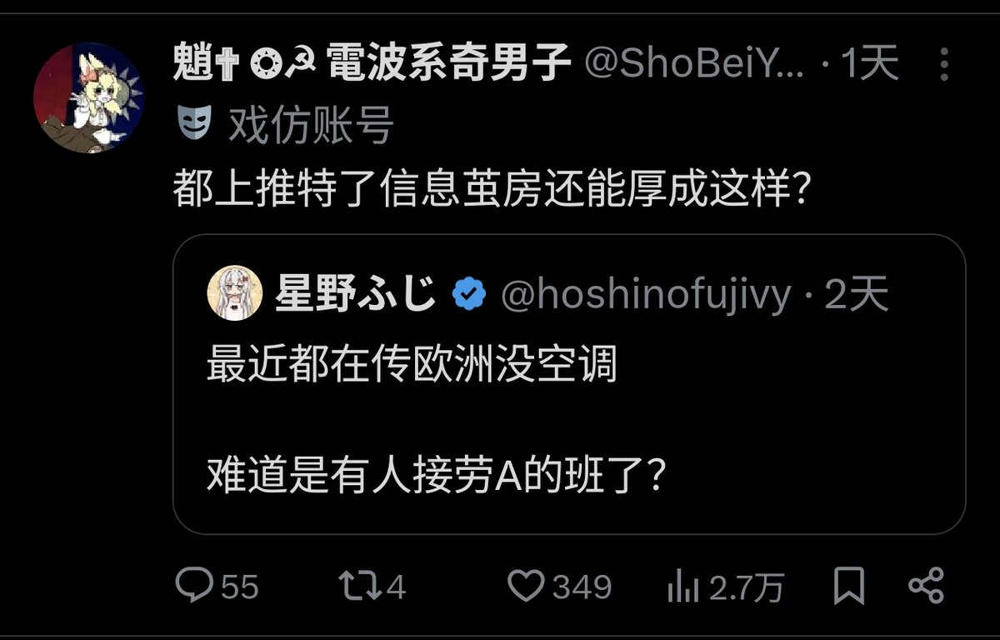

星野ふじ
@hoshinofujivy
@juurihakenshin @chino1379 @ShoBeiYong 你有没有发现，你自己在做着和masa一样的事？
你还有小号呀，真稀奇

十里坡键神✟魈 🇨🇦🇨🇳 仰卧起坐诈尸中
@juurihakenshin
@chino1379 @ShoBeiYong @hoshinofujivy 合着你不仅喜欢造谣别人没机会判断信息真伪，你还是个语文阅读能力缺失的dinner
我说是你了吗？你自己看清楚主谓宾 https://t.co/w9JIAo5wtP